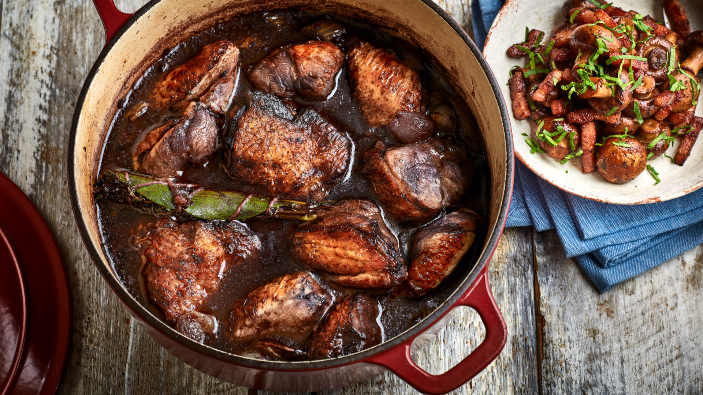

Coq au Vin

A classic French casserole of chicken braised in red wine with mushrooms and lardons.
Ingredients
- 6 bone-in, skin-on chicken thighs
- kosher salt and freshly ground black pepper to taste
- 8 ounces bacon, sliced crosswise into 1/2-inch pieces
- 10 large button mushrooms, quartered
- ½ large yellow onion, diced
- 2 shallots, sliced
- 2 teaspoons all-purpose flour
- 2 teaspoons butter
- 1 ½ cups red wine
- 6 sprigs fresh thyme
- 1 cup chicken broth
Method
- Preheat the oven to 375 degrees F (190 degrees C). Season chicken thighs all over with salt and black pepper.
- Sauté bacon in a large, oven-proof skillet over medium-high heat, turning occasionally, until evenly browned, about 10 minutes. Transfer bacon with a slotted spoon to a paper towel-lined plate, leaving drippings in the skillet.
- Increase the heat to high and place chicken thighs, skin-side down, into the skillet. Cook until browned, 2 to 4 minutes per side. Transfer chicken to a plate; drain and discard all but 1 tablespoon drippings from the skillet.
- Lower the heat to medium-high; sauté mushrooms, onion, and shallots with a pinch of salt in the hot skillet until golden and caramelized, 7 to 12 minutes.
- Stir flour and butter into vegetable mixture until completely incorporated, about 1 minute.
- Pour red wine into the skillet and bring to a boil while scraping browned bits of food off of the bottom of the pan with a wooden spoon. Stir bacon and thyme into red wine mixture; simmer until wine is about 1/3 reduced, 3 to 5 minutes. Pour chicken broth into wine mixture and return chicken thighs to the skillet; bring to a simmer.
- Transfer the skillet to the preheated oven and cook for 30 minutes. Spoon pan juices over the chicken and continue cooking until no longer pink at the bone and the juices run clear, about 30 minutes more. An instant-read thermometer inserted into the thickest part of the thigh, near the bone should read 165 degrees F (74 degrees C). Transfer chicken to a platter.
- Place skillet over high heat and reduce pan juices, skimming fat off the top as necessary, until sauce thickens slightly, about 5 minutes. Season with salt and pepper; remove and discard thyme. Pour sauce over chicken to serve.
Homepage